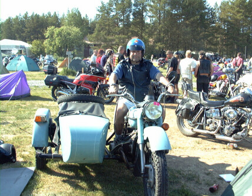
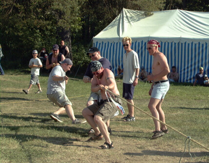
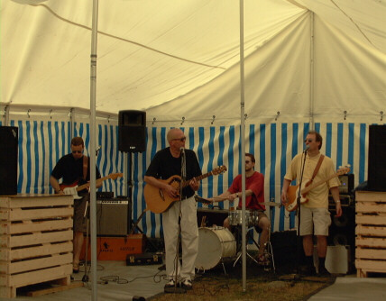
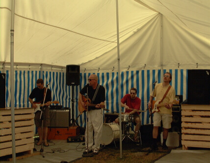
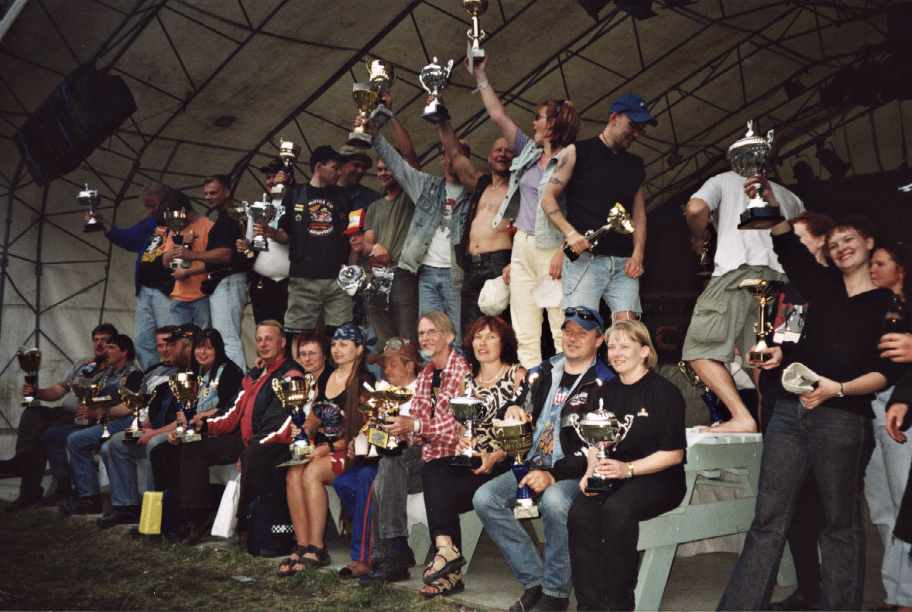

32. Kokko-Treffen (XXXII Kokko-Treffen)
Miehen ikään päässyt Kokko-Treffen nautti auringosta ja voi hyvin kesäkuun toisena viikonloppuna 7.-9.6., sillä osanottajia helli mitä ihanin kesäsää. Moni taisi polttaa nahkansakin viikonloppuna ohjelmaa seuratessaan. Auringonpaiste houkutteli liikkeelle motoristeja runsaslukuisemmin ja aikaisemmin kuin edellisinä vuosina, sillä kävijöitä oli reilut 1600 motoristia, joista jo noin 1300 oli saapunut launtaina iltapäivään mennessä. Ulkomaalaisiakin tuli paikalle nelisenkymmentä henkeä.
Kokko-Treffit on selvästi vakiinnuttanut paikkansa motoristien keskuudessa. Siitä on osoituksena melko tasainen ja jopa kasvava osallistujamäärä. Tänäkin vuonna kaikki majoituspaikat varattiin loppuun ennätysvauhtia heti ilmoittaumisen alettua, kertoo Harri Mykrä tyytyväisenä. Valitettavaa tosin on, että useat järjestäjät ovat valinneet tapahtumansa ajankohdaksi saman kesäkuun toisen viikonloppun. Hänen mielestään se karsii vain osallitujien määrää jokaisessa tapahtumassa.
Kokko-Treffit motoristien vakkarikamaa
Mykrän puheet vakiintuneesta tapahtumasta on helppo uskoa, kun tarkastelee virallisia tuloksia palkituista. Virallisia palkintoja jaetaan mm kauimpaa Treffeille saapuneelle. Tänä vuonna kauimpaa tulleen palkinnon pokkasi belgialainen Luc van Steenberghe, joka on palkittu Kokko-Treffien historiassa samalla perusteella useamman kerran. Eikä hän ole ainoa, joka on saapunut Keski-Euroopasta asti Treffeille vuosittain. Mahtaako saksalainen Mannfred Landman ajaa van Steenberghen kanssa yhtä matkaa, sillä myös hänet on palkittu pitkämatkalaisena monta kertaa. Kokko-Treffien nuorinta osallistujaa tänä vuonna ei tiedetä, mutta vanhin oli 76-vuotias Hannes Notkonen. Olisi kiva kuulla, mikä pitää miehen liikkeellä ja kuinka usein hän on Kokko-Treffeillä käynyt?
Rauhallisesti sujuneen tapahtuman järjestäminen sujuu Kokko MC Clubin jäseniltä jo vuosien tuomalla rutiinilla. Mukana järjestelyissä oli tällä kertaa noin 70 henkilöä. Marttojen keittämien puuron, sopan sekä kahvin lisäksi osallistujat pistivät poskeensa noin 70 kiloa savupossupihvejä. Juotavaa kuumassa kesäsäässä myytiin reilut pari tuhatta litraa.
Vanha konkari
Oulusta saapui Tapio Hägg, joka osallistui Treffeille nyt kolmatta kertaa peräkkäin. Kokko-Treffit tapahtumana on silti hänelle tuttu jo -70 luvun alusta lähtien, jolloin hän sai ensimmäisen pyöränsä. Sitten pyöräilyharrastukseen tuli tauko, kun hän palasi välillä kilpapurjehduksen pariin, jota hän on harrastanut lapsesta asti. Moottoripyöräharrastus veti miehen kuitenkin takaisin ja mies osti jälleen moottori- pyörän ja jätti kilpapurjehduksen. Nykyisin Hägg käy parissa kolmessa kokoontumisajossa joka vuosi, joista Kokko-Treffit on "must" kesän ensimmäisenä kokoontumisajona. Toinen vakituinen vierailukohde on Kontioralli. Kolmas kokoontumisajo vaihtelee vuosittain.
- Silloin kun minä sain ensimmäisen pyöräni 16-vuotiaana, oli enemmän nuoria motoristeja. Nykyään kokoontumisajoissa tapaa eniten keski-ikäisiä asian harrastajia. Erääksi syyksi hän arvelee nousseen vaatimustason ja mukavuudenhalun. Yleisesti ottaen ajetaan paremmilla pyörillä, kuin parikymmentä vuotta sitten. Moottoripyöräilystä on tullut Häggin mielestä lähinnä keski-ikäisten harrastus. Vai mitä mieltä olette? Tapio Hägg joutui tulemaan treffeille yksin, kun kaveri sai kihtikohtauksen, jota pidetään vanhojen tautina eikä vaimo osallistu kokoontumisajoihin.
TULOKSET
Treffien ensikertalaiset

Oululaiset Reijo ja Tea Liljeblad ajoivat Treffeille upealla vanhalla sivuvaunullisella Uralilla ensimmäistä kertaa. Kokko-Treffien meininkiin he ihastuivat niin, että tulevat kyllä toistekin, jos vain Uralin kaikki 649 "tiukkaa kuutiota suostuvat liikkeelle yhtä aikaa".

Epävirallisista tuloksista voi mainita kuinka pohjalaisten miesten mainetta voimamiehinä vahvisti köydenvetokilpailu, sillä kaikki palkitut joukkueet olivat pohjalaisia.


Kari Mäkinen bändinsä kanssa viihdytti treffiläisiä lauantai-iltapäivänä olutteltassa.

Vuoden 2002 Kokko-Treffien palkitut yhteiskuvassa.